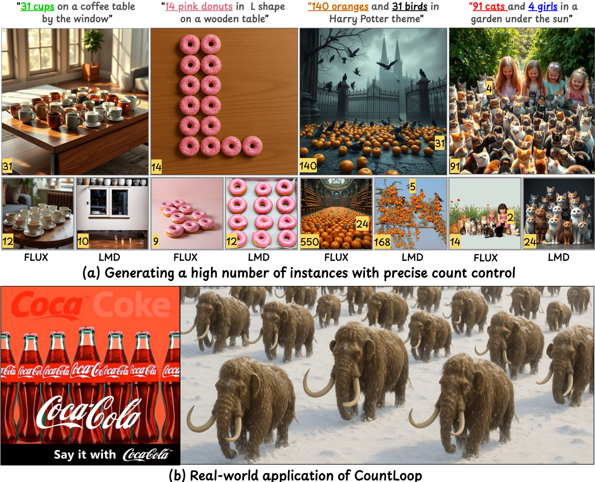

CountLoop: Training-Free High-Instance Image Generation
via Iterative Agent Guidance
TL;DR: CountLoop is a training-free framework that achieves precise instance control using iterative, structured feedback. Our method alternates between synthesis and evaluation, using a VLM-guided agent as both a layout planner and a critic.

Abstract
Diffusion models excel at photorealistic synthesis but struggle with precise object counts, especially in high-density settings. We introduce COUNTLOOP, a training-free framework that achieves precise instance control using iterative, structured feedback. Our method alternates between synthesis and evaluation, using a VLM-guided agent as both a layout planner and a critic. This agent provides explicit feedback on object counts, spatial arrangements, and attributes to refine the scene layout iteratively. Instance-driven attention masking and cumulative attention composition further prevent semantic leakage, ensuring clear object separation even in occluded scenes. Evaluations on high-instance benchmarks show COUNTLOOP achieves up to 2x higher counting accuracy and significantly improves spatial alignment over strong layout-based, gradient-guided, and agentic approaches, while maintaining photorealism.
Pipeline Overview

CountLoop operates in three stages: (1) A Design VLM interprets the prompt to produce realistic layouts. (2) These layouts guide style-consistent image generation via a cumulative attention mechanism. (3) A Critic VLM assesses the output for counting accuracy and aesthetic quality, providing structured feedback to refine both the layout and prompt. This iterative loop runs until a target quality score is reached, enabling complex, high-instance images without retraining the diffusion model.
Visual Results

CountLoop consistently avoids semantic drift, grid artifacts, and count inaccuracies that outperforms competitors for high-instance image generation. It scales reliably to 100+ instances per image.

Comparison with state-of-the-art methods. CountLoop accurately renders high counts (e.g., "17 vases", "104 hot air balloons") with natural arrangements, whereas competitors often under-generate or produce artificial clusters.
Benchmarks & Evaluation
We evaluate on four sets spanning instance count and compositional difficulty: COCO-Count, T2I-CompBenchCount, and newly proposed CountLoop-S and CountLoop-M.

Counting and Aesthetic Quality Across Four Benchmarks
| Type | Model | Single Category | Multi Categories | ||||||||||
|---|---|---|---|---|---|---|---|---|---|---|---|---|---|
| COCO-Count | T2I-CompBench | CountLoop-S | CountLoop-M | ||||||||||
| F1↑ | MAE↓ | Spatial↑ | F1↑ | MAE↓ | Spatial↑ | F1↑ | MAE↓ | Spatial↑ | F1↑ | MAE↓ | Spatial↑ | ||
| T2I | SDXL | 74.00 | 2.37 | 0.38 | 76.00 | 2.72 | 0.75 | 65.00 | 29.96 | 0.63 | 55.00 | 9.89 | 0.55 |
| FLUX | 87.00 | 1.40 | 0.53 | 83.00 | 1.48 | 0.78 | 71.00 | 17.47 | 0.65 | 63.00 | 9.62 | 0.58 | |
| SD 3.5 | 49.00 | 1.10 | 0.46 | 84.00 | 1.58 | 0.76 | 70.00 | 21.81 | 0.64 | 69.00 | 8.40 | 0.56 | |
| SDXL-Turbo | 45.20 | 2.50 | 0.23 | 65.45 | 3.76 | 0.53 | 32.25 | 51.14 | 0.39 | 45.21 | 9.95 | 0.37 | |
| Counting Guidance | 67.54 | 1.68 | 0.63 | 71.41 | 3.90 | 0.56 | 36.67 | 42.49 | 0.47 | 64.42 | 8.43 | 0.41 | |
| GPT-4o | 72.00 | 0.58 | 0.55 | 91.00 | 1.71 | 0.80 | 49.45 | 33.56 | 0.69 | 79.10 | 4.61 | 0.60 | |
| L2I | LMD | 58.00 | 3.09 | 0.24 | 74.00 | 5.56 | 0.73 | 66.00 | 16.62 | 0.66 | 71.00 | 6.34 | 0.64 |
| MIGC | 79.00 | 1.83 | 0.36 | 70.00 | 2.96 | 0.65 | 67.00 | 17.54 | 0.65 | 72.00 | 6.28 | 0.62 | |
| CountGen | 58.99 | 1.88 | 0.61 | 63.75 | 5.22 | 0.75 | 48.18 | 34.44 | 0.72 | 72.00 | 6.46 | 0.69 | |
| Agentic | GenArtist | 75.40 | 1.50 | 0.45 | 85.33 | 1.50 | 0.70 | 51.00 | 32.47 | 0.60 | 77.87 | 4.93 | 0.57 |
| SLD | 90.34 | 1.15 | 0.70 | 91.50 | 1.44 | 0.77 | 55.04 | 29.65 | 0.75 | 82.46 | 3.74 | 0.65 | |
| RPG | 84.89 | 1.28 | 0.60 | 91.32 | 1.47 | 0.75 | 51.89 | 31.85 | 0.70 | 80.16 | 4.34 | 0.62 | |
| CountLoop (Ours) | 95.06 | 0.45 | 0.93 | 86.76 | 1.23 | 0.79 | 87.32 | 7.59 | 0.93 | 86.58 | 2.13 | 0.73 | |
BibTeX Citation
@article{Mondal2024CountLoop,
title = {CountLoop: Training-Free High-Instance Image Generation via Iterative Agent Guidance},
author = {Mondal, Anindya and Banerjee, Ayan and Nag, Sauradip and
Llados, Josep and Zhu, Xiatian and Dutta, Anjan},
journal = {arXiv preprint},
year = {2024}
}License
We release our work under the Open RAIL-S License, which prohibits exploitative applications through robust contractual obligations and liabilities. We want to encourage users to exercise reasoned scepticism towards any downstream deployment that enables the monitoring of individuals without proper legal safeguards.
Contact: a.mondal@surrey.ac.uk | GitHub
© 2024 CountLoop Project